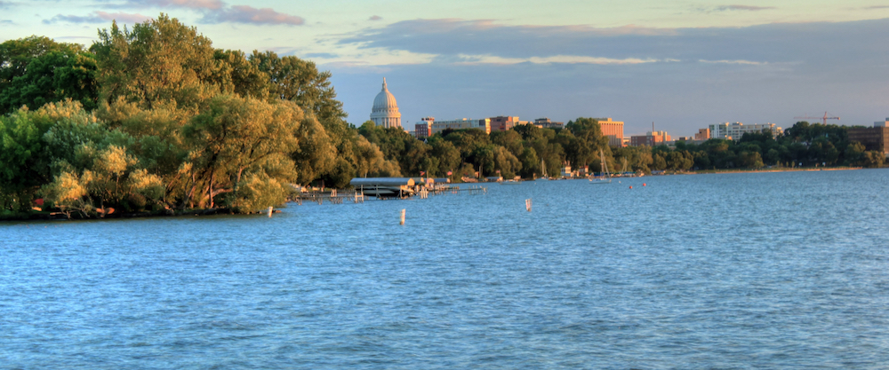

Lakes & Parks
Madison has many lakes, parks, and walking paths that are great for relaxing or spending time with friends.
Discover places, activities, and experiences around Madison, Wisconsin.
Start Exploring
Madison has many lakes, parks, and walking paths that are great for relaxing or spending time with friends.
Students can find many restaurants, cafés, and local food spots around the city.
There are many activities and events that students can enjoy throughout the year.
Lake Mendota is a central part of Madison and is a popular place for walking, relaxing, and enjoying the outdoors.

State Street connects the UW–Madison campus with downtown Madison and has restaurants, shops, and other places to explore.
The Wisconsin State Capitol is an important landmark in downtown Madison and is surrounded by parks, restaurants, and events.
Start exploring Madison and find a place that interests you.
Explore Madison